The Night Lantern
The lines are open.
A fictional late-night call-in radio drama on YouTube. Midnight to four on 1470 AM, Ray Talbot takes calls from truckers, night nurses, motel clerks and fire lookouts about things that should not have happened. The scripts and every voice are AI-generated.
Start Night 1 Subscribe on YouTube
New nights Tuesdays and Fridays, 7 PM Pacific. Each one runs about forty minutes. Made for sleeping, driving, and the hours nobody talks about.
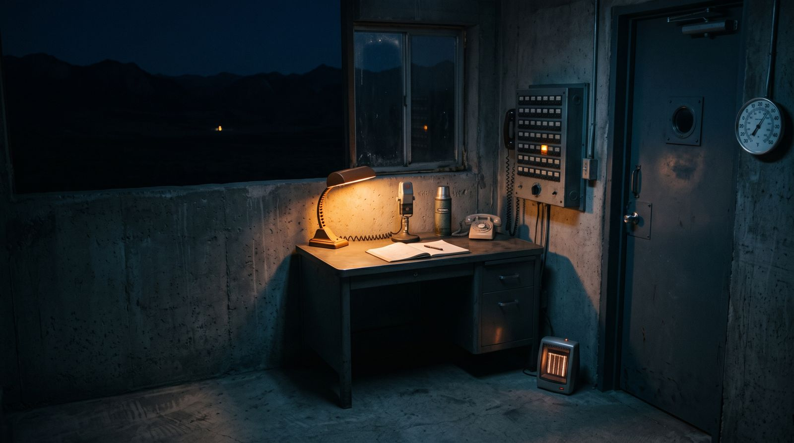
It's a little after midnight. You're listening to the Night Lantern on fourteen-seventy AM. I'm Ray Talbot and I'm here until four. If you're out there, I know you're out there. The lines are open.
How a night goes
Forty to forty-five minutes. Open lines. Ray never mocks a caller and he never says “interesting.” He asks one question too many, and the extra question is always about a sound, or about who else knows where the caller is. There is a thermos on the desk he does not drink from. He has not missed a night. When he is rattled he does not change tone. He goes to an ad break early. At four the station stops carrying him. The sun isn't up until about half past five.
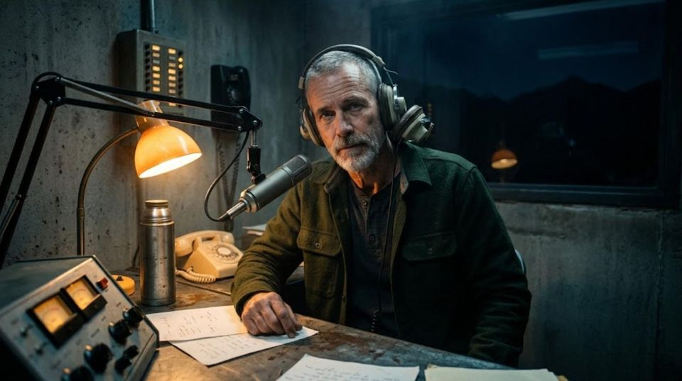
Who's on the line
The regulars. Pick a line on the board to see who's calling.
Six lines lit. Nobody picked up yet.
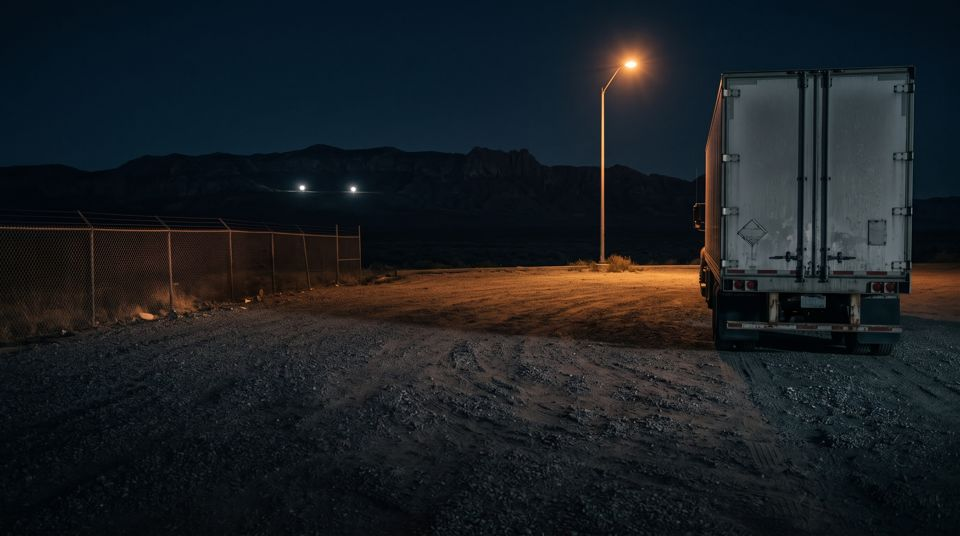
Dale Long-haul. Home two nights a week. Opens the show.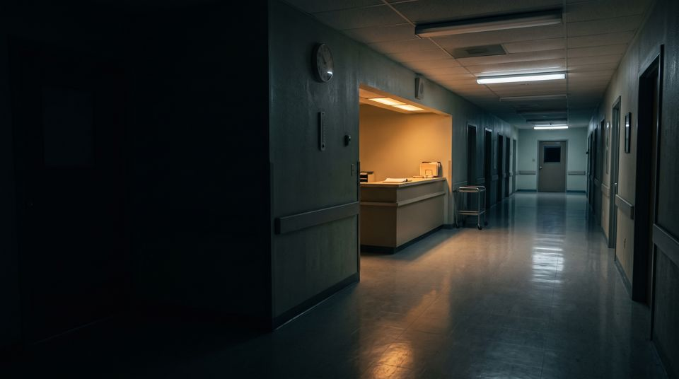
Marisol Night nurse, county hospital, fourth floor.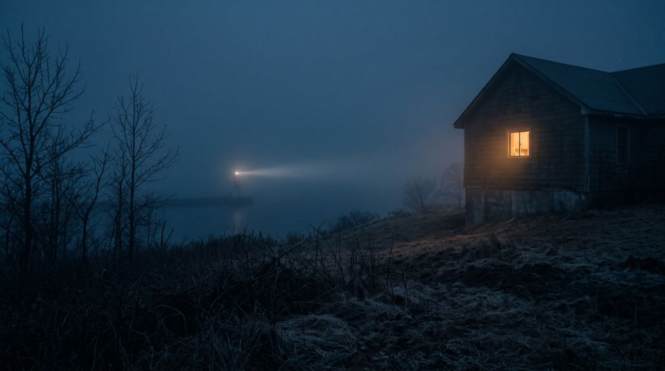
June Eighty-one. A widow. Has called since 2009.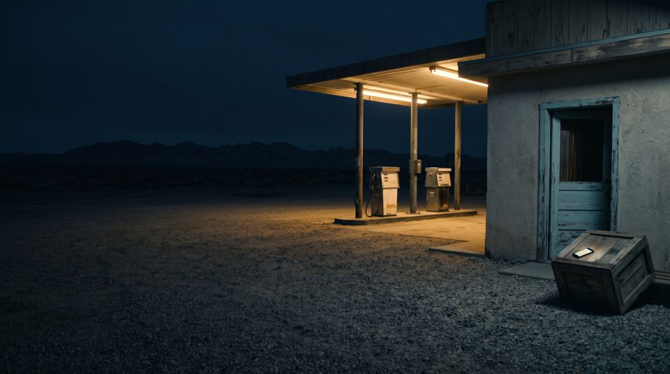
Teddy Nineteen. Overnight at a gas station. Records everything.- Pastor Kim Calls to argue with Ray. Stays on the line.
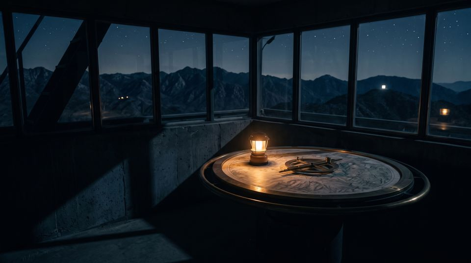
Lorraine Fire lookout. Stayed past the season.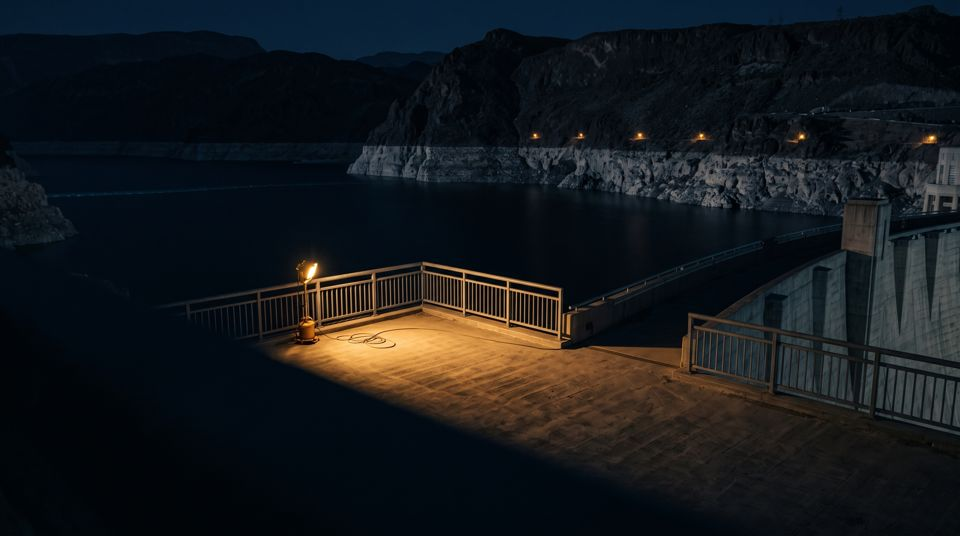
Hank Dam operator. Has the logs.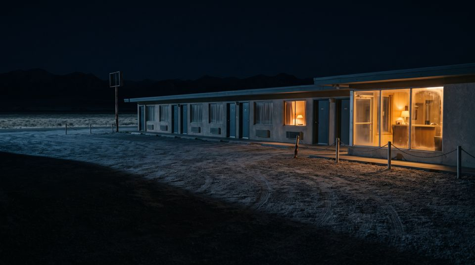
Cass Night clerk, interstate motel.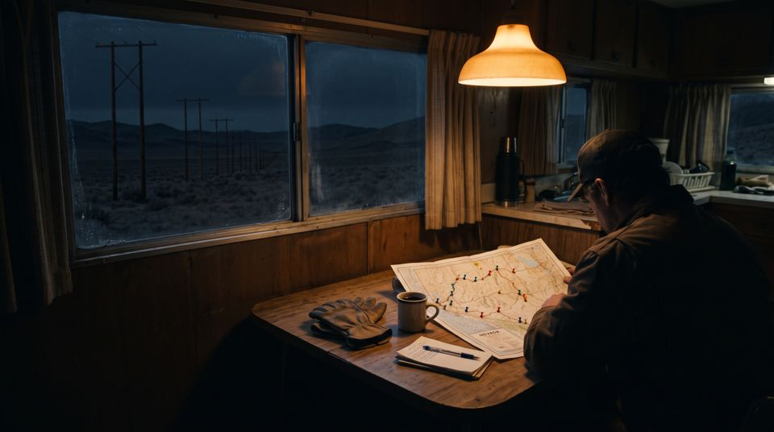
Wendell Retired lineman. First to report the lights.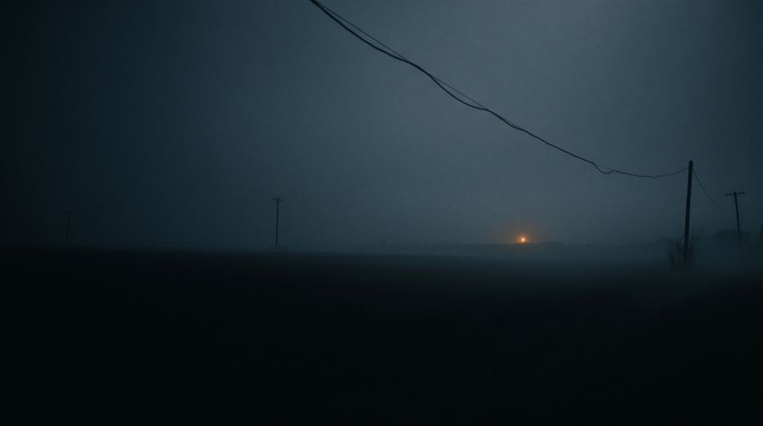
The quiet man Unknown. Calls three times a season and says almost nothing.- Nora Remote station operator. Heard only by phone. From Season 2.
Coming up on 1470
The next nights on the log.
During the break
The ads are part of the night. They are not real businesses.
- Halvorsen Mattress and Sleep
- Sleep like the whole town does.
- Reach Tire and Alignment
- Because the ridge road doesn't forgive.
- The All-Night Skillet
- Open until it isn't.
- Pruitt's Hardware
- Flashlights, batteries, and we don't ask why.
- Coastal Range Mutual
- Covering what you can explain.
- Listener Club
- Keep the lantern lit. Call in. Say where you are.
Who makes this
A person plans each season: what happens, who changes, how it ends. AI writes the scenes inside that plan and voices every caller. Each night is checked against what earlier nights established. Night Lantern Productions. In the tradition of late-night call-in radio.